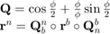

通过等效旋转矢量旋转矢量

function vo = rotv(rv, vi) % 功能：通过等效旋转矢量旋转矢量 % 输入：rv - 等效旋转矢量 % vi - 需要转移的矢量 % 输出：vo - 转移后的矢量 n2 = rv(1)*rv(1) + rv(2)*rv(2) + rv(3)*rv(3); if n2<1.0e-8 % cos(n/2)=1-n2/8+n4/384; sin(n/2)/n=1/2-n2/48+n4/3840 q1 = 1-n2*(1/8-n2/384); s = 1/2-n2*(1/48-n2/3840); else n = sqrt(n2); n_2 = n/2; q1 = cos(n_2); s = sin(n_2)/n; end q2 = s*rv(1); q3 = s*rv(2); q4 = s*rv(3); %等效旋转矢量先转换成四元数，在通过四元数进行矢量变换 qo1 = - q2 * vi(1) - q3 * vi(2) - q4 * vi(3); qo2 = q1 * vi(1) + q3 * vi(3) - q4 * vi(2); qo3 = q1 * vi(2) + q4 * vi(1) - q2 * vi(3); qo4 = q1 * vi(3) + q2 * vi(2) - q3 * vi(1); vo = vi; vo(1) = -qo1 * q2 + qo2 * q1 - qo3 * q4 + qo4 * q3; vo(2) = -qo1 * q3 + qo3 * q1 - qo4 * q2 + qo2 * q4; vo(3) = -qo1 * q4 + qo4 * q1 - qo2 * q3 + qo3 * q2;